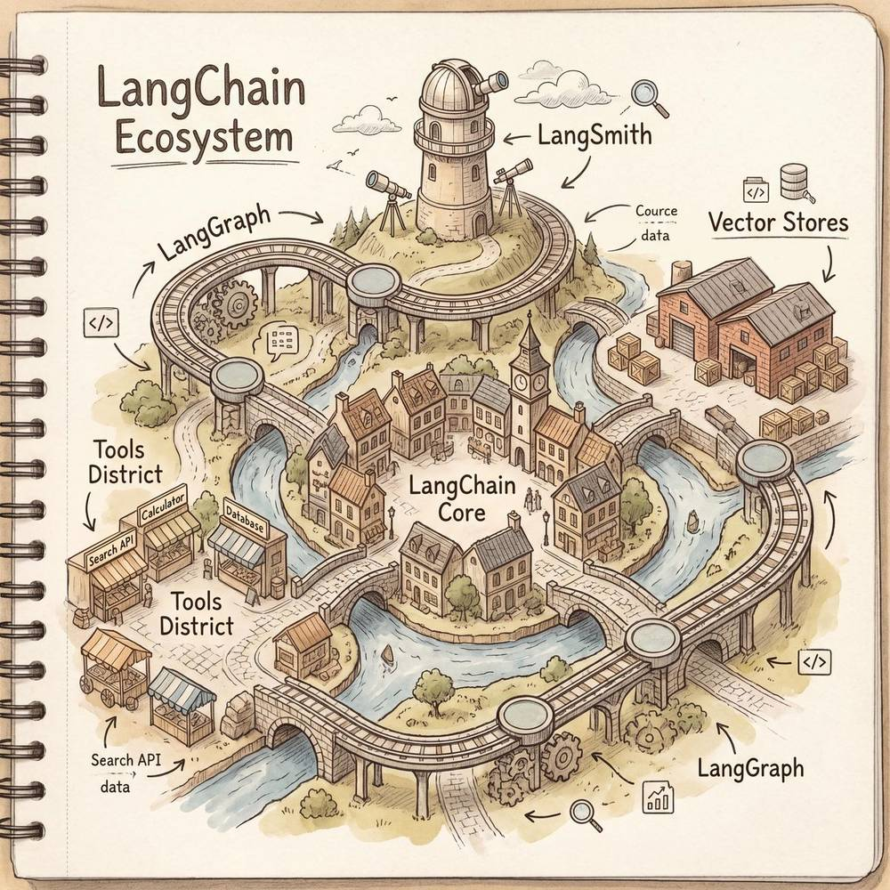
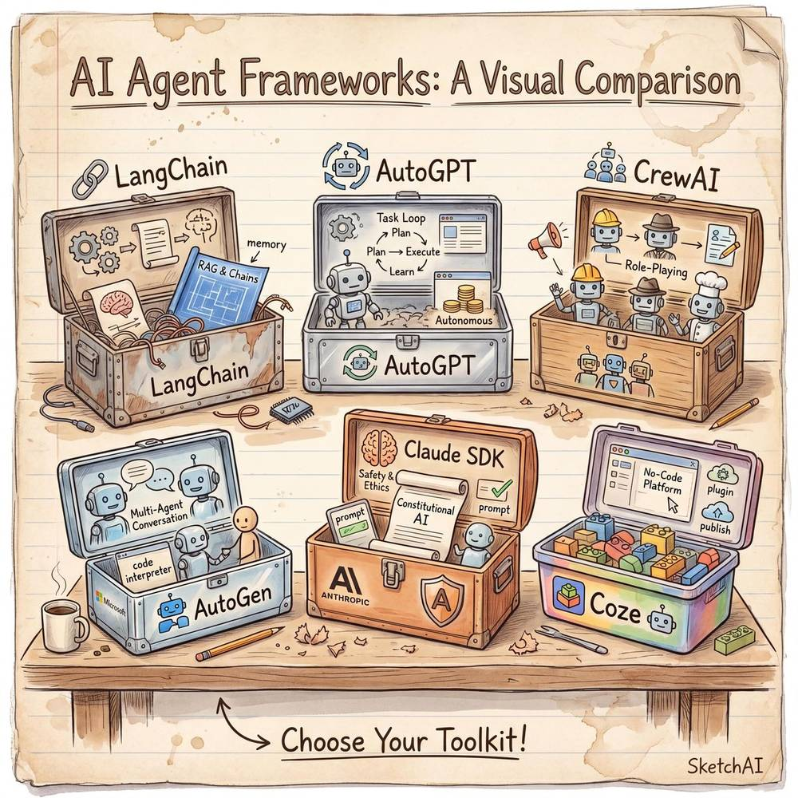
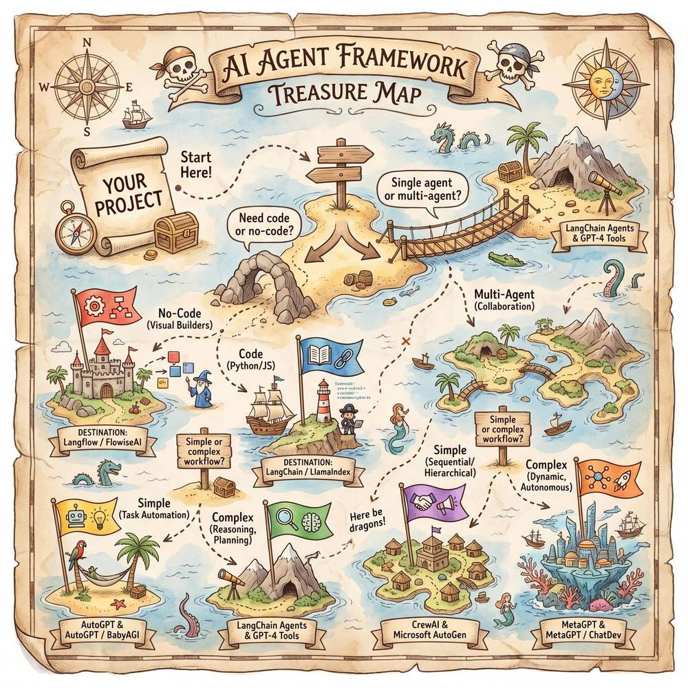

第四章：主流 Agent 框架与平台
导读：如果说大语言模型是 Agent 的"大脑"，那么框架与平台就是它的"骨骼与肌肉"。选择一个合适的框架，往往决定了你能以多快的速度、多低的成本把一个 Agent 想法变为可运行的产品。本章将对当前最主流的 Agent 框架与平台进行全面、深入的剖析，帮助你建立完整的技术选型认知。
4.1 LangChain / LangGraph
4.1.1 LangChain 概览
LangChain 是目前生态最成熟、社区最活跃的 LLM 应用开发框架之一，由 Harrison Chase 于 2022 年底开源。它的核心目标是：让开发者像拼搭乐高积木一样，把 LLM 与外部工具、数据源、记忆模块等组件自由组合，快速构建复杂的 AI 应用。
类比：LangChain 就像一套乐高积木——每一块积木（Chain、Tool、Memory、Retriever……）都有标准的接口凸起和凹槽，你可以随心所欲地拼接出任何想要的形状。不会编程？没关系，拿起积木按照说明书拼就行；想搞创作？那就自由发挥。
4.1.2 核心概念详解
| 概念 | 定义 | 作用 | 典型示例 |
|---|---|---|---|
| Chain（链） | 将多个处理步骤串联起来的执行序列 | 实现多步骤的推理与处理流水线 | LLMChain、SequentialChain、RouterChain |
| Agent（智能体） | 能够自主决定调用哪些工具、按什么顺序执行的实体 | 让 LLM 具备"自主决策 + 行动"能力 | ReAct Agent、OpenAI Functions Agent |
| Tool（工具） | Agent 可以调用的外部能力，如搜索引擎、计算器、API | 扩展 LLM 的能力边界 | SerpAPI、PythonREPL、SQLDatabase |
| Memory（记忆） | 在多轮对话或多步执行中保持上下文的模块 | 让 Agent 具备"记住过去"的能力 | ConversationBufferMemory、ConversationSummaryMemory |
| Retriever（检索器） | 从外部知识库中检索相关信息的组件 | 实现 RAG（检索增强生成），让回答基于事实 | VectorStoreRetriever、BM25Retriever |
Chain 的进化：LangChain 最初以 Chain 为核心抽象——你把一个个处理步骤像锁链一样串起来。但随着应用复杂度提升，简单的线性链已经不够用了，于是诞生了 LangGraph。
4.1.3 LangGraph：有状态图的力量
LangGraph 是 LangChain 团队推出的下一代编排引擎，它将 Agent 的执行流程建模为一个有向有状态图（Stateful Graph）。
为什么需要图？
- 线性链只能处理 A → B → C 的顺序流程；
- DAG（有向无环图）可以处理分支和并行，但不能回退；
- 有状态图支持循环、条件跳转、人工审批节点，可以描述任何复杂的 Agent 行为。
LangGraph 的核心特点：
- State（状态）：整个图共享一个全局状态对象，每个节点可以读取和更新它。这意味着节点之间可以高效地传递信息。
- Node（节点）：图中的每个节点是一个处理单元，可以是 LLM 调用、工具执行、条件判断等。
- Edge（边）：节点之间的连接关系，支持条件边（根据状态决定下一步走向）。
- Cycle（循环）：支持节点回环，这对于"思考 → 行动 → 观察 → 再思考"的 Agent 循环至关重要。
- Checkpoint（检查点）：可以在任意节点保存状态快照，支持回放、调试和人工介入。
[开始] → [规划节点] → [执行节点] → [评估节点] ──是否满意──→ [输出]
↑ |
└─────── 不满意 ───────────┘LangGraph 的适用场景：
- 多步推理与自我修正的 Agent
- 需要人工审批的工作流（Human-in-the-loop）
- 多 Agent 协作编排
- 需要持久化状态和断点续传的长时任务
4.1.4 LangChain 生态全景
| 组件 | 说明 |
|---|---|
| LangChain Core | 核心抽象与接口定义 |
| LangChain Community | 社区贡献的集成（数百个第三方工具、向量数据库、LLM 接口等） |
| LangGraph | 有状态图编排引擎 |
| LangSmith | 可观测性平台（追踪、调试、评估、监控） |
| LangServe | 一键将 Chain/Agent 部署为 REST API |
优势：生态极其丰富，几乎所有主流 LLM、向量数据库、工具都有官方或社区集成；文档齐全，社区活跃。

劣势：抽象层次多，初学者容易迷失在大量的类和概念中；部分早期 API 变动频繁；过度抽象可能带来性能开销。
4.2 AutoGPT / BabyAGI
4.2.1 历史意义
2023 年 3 月，AutoGPT 横空出世，成为 GitHub 上增长最快的开源项目之一。它第一次向公众展示了一个震撼的概念：给 AI 一个目标，让它自己分解任务、自己执行、自己反思，全程无需人工干预。
类比：AutoGPT 就像给 AI 发了一个 OKR——你告诉它"把我们公司的竞品分析报告写好"（Objective），它自己拆解出 Key Results（搜索竞品信息、分析数据、撰写报告），然后一步步自主完成。
BabyAGI 几乎同一时间出现，以更精简的代码（不到 200 行 Python）实现了类似的"自主任务管理"概念，堪称优雅的概念验证。
4.2.2 核心工作机制
AutoGPT 的执行循环：
设定目标 → 生成任务列表 → 执行当前任务 → 观察结果 → 反思 & 更新任务列表 → 继续执行...核心组成：
- 目标设定模块：用户输入一个高层目标（如"研究 2025 年电动汽车市场趋势并生成报告"）。
- 任务分解与优先级排序：LLM 将目标拆分为可执行的子任务，并按优先级排序。
- 执行引擎：依次执行每个子任务，可调用搜索引擎、文件系统、代码执行等工具。
- 记忆系统：使用向量数据库存储已获取的信息和执行历史。
- 自我反思：执行后评估结果，决定是否需要修改计划或补充新任务。
BabyAGI 的精简架构：
BabyAGI 将自主 Agent 的本质提炼为三个函数：
execution_agent()：执行当前任务task_creation_agent()：根据执行结果创建新任务prioritization_agent()：对任务列表重新排序
4.2.3 局限性与反思
尽管 AutoGPT/BabyAGI 具有里程碑式的历史意义，但它们在实际应用中暴露出了显著的问题：
| 问题 | 具体表现 |
|---|---|
| 目标漂移 | Agent 在执行过程中逐渐偏离原始目标，在无关的子任务中越走越远 |
| 无限循环 | 陷入"搜索 → 发现新问题 → 再搜索"的死循环，无法收敛 |
| Token 消耗巨大 | 每一步都需要完整的 Prompt，长时运行会消耗大量 Token 和费用 |
| 结果质量不稳定 | 缺乏有效的质量控制机制，输出结果参差不齐 |
| 缺乏人工干预 | "全自主"理念听起来很酷，但在实际业务中，关键节点的人工审核不可或缺 |
历史价值：AutoGPT/BabyAGI 最大的贡献在于——它们让全世界看到了"自主 Agent"的可能性，激发了后续大量框架的诞生。它们是 Agent 时代的"概念车"，虽然不能直接上路，但指明了方向。
4.3 CrewAI（多智能体协作）
4.3.1 核心理念
CrewAI 的核心理念极其直观：像组建一个项目团队一样组建 AI Agent 团队。
类比：想象你要做一个市场调研项目。你不会让一个人干所有事，而是会组建一个团队——有人负责数据收集（Researcher），有人负责数据分析（Analyst），有人负责撰写报告（Writer），有人负责最终审核（Reviewer）。CrewAI 就是这个思路：每个 Agent 都有自己的角色（Role）、目标（Goal）和背景故事（Backstory）。
4.3.2 核心概念
| 概念 | 说明 | 对应现实 |
|---|---|---|
| Agent | 具有特定角色、目标、工具的智能体 | 团队中的某个成员 |
| Task | 具体的工作任务，分配给某个 Agent | 项目中的具体工作项 |
| Crew | 一组 Agent 组成的团队 | 项目团队 |
| Process | 团队的协作模式（顺序执行 / 层级管理） | 项目管理流程 |
| Tool | Agent 可以使用的外部工具 | 团队成员使用的软件和资源 |
4.3.3 协作机制
CrewAI 支持两种核心协作模式：
1. 顺序执行（Sequential Process）
Researcher → Analyst → Writer → Reviewer前一个 Agent 的输出自动作为后一个 Agent 的输入，像流水线一样运作。
2. 层级管理（Hierarchical Process）
Manager Agent
/ | \
Researcher Analyst Writer由一个"经理 Agent"统一调度，动态分配任务给下属 Agent，更灵活但也更复杂。
4.3.4 代码示例（概念性）
from crewai import Agent, Task, Crew, Process
# 定义角色
researcher = Agent(
role="市场研究员",
goal="收集最新的市场数据和竞品信息",
backstory="你是一位经验丰富的市场研究专家，擅长从海量信息中提炼关键洞察。",
tools=[search_tool, web_scraper],
)
analyst = Agent(
role="数据分析师",
goal="对收集的数据进行深度分析，发现趋势和机会",
backstory="你是一位严谨的数据分析师，善于用数据说话。",
)
writer = Agent(
role="报告撰写人",
goal="将分析结果撰写成专业、易读的报告",
backstory="你是一位优秀的商业写作专家。",
)
# 定义任务
research_task = Task(description="调研2025年中国新能源汽车市场格局", agent=researcher)
analysis_task = Task(description="分析市场数据，识别Top3增长机会", agent=analyst)
writing_task = Task(description="撰写一份3000字的市场分析报告", agent=writer)
# 组建团队并执行
crew = Crew(
agents=[researcher, analyst, writer],
tasks=[research_task, analysis_task, writing_task],
process=Process.sequential,
)
result = crew.kickoff()4.3.5 优势与局限
优势：概念直观、代码简洁、上手极快；角色定义灵活，天然适合"分工协作"类场景。
局限：底层依赖 LLM 的角色扮演能力，复杂场景下角色混淆的情况仍有发生；对工具的集成深度不如 LangChain；调试和可观测性有待加强。
4.4 Microsoft AutoGen
4.4.1 核心理念
AutoGen 是微软研究院推出的多智能体对话框架，它的核心思想非常独特：通过多个 Agent 之间的"对话"来完成复杂任务。
类比：AutoGen 就像一个微信群聊讨论方案——群里有产品经理、工程师、设计师，还有老板（人类）。大家各自发言、互相回应、质疑和补充，通过多轮对话逐步把一个模糊的想法变成清晰的方案。老板随时可以插话给出意见或做最终决策。
4.4.2 核心特点
1. 对话式协作（Conversational Agent）
AutoGen 中的 Agent 通过互相发送消息来协作。每个 Agent 收到消息后，根据自己的角色和能力生成回复。这种模式天然贴合 LLM 的对话能力。
2. 丰富的 Agent 类型
| Agent 类型 | 说明 |
|---|---|
AssistantAgent |
由 LLM 驱动的助手，可以写代码、分析问题 |
UserProxyAgent |
代表人类用户，可以执行代码、提供反馈 |
GroupChatManager |
管理多个 Agent 的群聊，控制发言顺序 |
ConversableAgent |
最基础的可对话 Agent，其他类型的父类 |
3. Human-in-the-loop（人机协同）
这是 AutoGen 最大的亮点之一。在 Agent 执行过程中，人类可以随时介入：
- 审批关键决策：Agent 提出方案后，等待人类确认才继续执行。
- 提供反馈：人类可以指出 Agent 的错误，Agent 据此修正。
- 终止执行：人类判断方向不对时可以随时叫停。
这种设计对于企业级应用至关重要——完全自主的 Agent 在生产环境中风险太高。
4. 代码执行能力
AutoGen 内置了安全的代码执行环境（支持 Docker 沙箱），Agent 可以编写并执行 Python 代码来完成数据分析、可视化等任务。
4.4.3 典型工作流
UserProxy: "帮我分析这份销售数据，找出表现最差的3个地区"
↓
Assistant: "好的，我来写一段 Python 代码分析数据..."（生成代码）
↓
UserProxy: （自动执行代码，返回结果）
↓
Assistant: "根据分析结果，表现最差的3个地区是...建议采取以下措施..."
↓
UserProxy（人类审核）: "分析得不错，但请补充同比数据"
↓
Assistant: "好的，我补充同比分析..."4.4.4 AutoGen 的演进
微软在 2024-2025 年推出了 AutoGen 0.4+ 版本（也被称为 AutoGen Studio），进行了全面重构：
- 引入了事件驱动架构
- 支持更灵活的 Agent 注册和发现机制
- 提供了可视化的 Studio 界面用于构建和调试多 Agent 工作流
- 增强了分布式执行能力
4.5 Anthropic Claude Agent SDK
4.5.1 概览
Anthropic 推出的 Claude Agent SDK 是专为构建安全、可靠的 AI Agent 而设计的开发工具包。它与 Claude 模型深度集成，充分发挥 Claude 在长上下文理解、指令遵循和安全对齐方面的优势。
4.5.2 核心特性
1. MCP 协议（Model Context Protocol）
MCP 是 Anthropic 提出的一项开放协议，旨在标准化 LLM 与外部工具、数据源之间的连接方式。
如果说 USB 统一了电脑与外设的连接方式，那 MCP 就是要统一 AI 模型与外部世界的连接方式。
MCP 的核心架构：
- MCP Server：提供工具和数据源的服务端（如数据库查询、文件操作、API 调用）
- MCP Client：模型侧的客户端，负责发现和调用 MCP Server 提供的能力
- 协议规范：定义了工具描述、调用、返回结果的标准格式
MCP 的价值在于：
- 标准化：不同工具的接入方式统一，降低集成成本
- 安全性：内置权限控制和沙箱隔离
- 可复用：一个 MCP Server 可以被多个 Agent 共享使用
- 生态化：社区可以贡献和共享 MCP Server，形成工具生态
2. Tool Use（工具使用）
Claude Agent SDK 提供了原生的工具使用能力，Claude 模型可以：
- 理解工具的功能描述（schema）
- 自主决定何时调用哪个工具
- 正确构造工具调用参数
- 解析工具返回结果并整合到回答中
与其他框架不同的是，Claude 的 Tool Use 是模型原生支持的，而非在 Prompt 层面模拟，因此工具调用的准确性和稳定性更高。
3. 安全对齐（Safety Alignment）
这是 Anthropic 最核心的差异化优势。Claude Agent SDK 在设计上将安全性放在首位：
| 安全特性 | 说明 |
|---|---|
| Constitutional AI | 模型内置了一套"宪法"原则，确保行为符合人类价值观 |
| 权限分级 | Agent 的操作可以按风险等级分级，高风险操作需要人工确认 |
| 沙箱执行 | 代码执行等操作在隔离环境中进行 |
| 审计日志 | 完整记录 Agent 的每一步决策和操作，便于事后审查 |
| 拒绝机制 | 对于不安全或不道德的请求，Agent 会主动拒绝 |
4.5.3 适用场景
- 对安全性和可靠性有极高要求的企业应用
- 需要处理敏感数据的 Agent（如金融、医疗、法律）
- 希望利用 MCP 生态快速集成多种工具的开发者
- 偏好 Claude 模型能力（长上下文、指令遵循）的团队
4.6 Coze / 扣子
4.6.1 核心理念
Coze（海外版）/ 扣子（国内版）是字节跳动推出的 AI Bot 开发平台，它的核心定位是：让不会写代码的人也能搭建 AI Agent。
类比：如果 LangChain 是写代码搭 Agent，那 Coze 就像搭建 PPT 一样搭 Agent——拖拖拽拽、点点设置，一个功能完整的 AI 助手就出来了。
4.6.2 核心能力
1. 可视化搭建
Coze 提供了完整的可视化界面：
- Persona 设定：通过自然语言定义 Bot 的身份、性格、行为规范
- 知识库管理：上传文档、网页、表格等，Bot 自动构建 RAG 检索
- 工作流编辑器：拖拽式画布，可视化编排复杂的处理逻辑
- 对话调试：实时预览和测试 Bot 的表现
2. 插件生态
Coze 拥有丰富的插件市场：
| 插件类型 | 示例 |
|---|---|
| 搜索类 | 必应搜索、新闻搜索、学术搜索 |
| 工具类 | 天气查询、汇率转换、日程管理 |
| 数据类 | 数据库查询、表格分析 |
| 媒体类 | 图片生成、语音合成 |
| 自定义 | 开发者可以创建自己的插件并发布 |
3. 工作流编排
这是 Coze 的核心亮点之一。通过可视化工作流编辑器，你可以：
- 定义多步骤处理流程
- 设置条件分支和循环
- 在流程中插入 LLM 节点、代码节点、插件节点
- 配置输入输出变量的映射关系
- 设置错误处理和回退逻辑
4. 多渠道发布
搭建好的 Bot 可以一键发布到多个渠道：
- 飞书 / Lark
- 微信公众号 / 企业微信
- Discord / Telegram / Slack
- Web 网页嵌入
- API 调用
4.6.3 优势与局限
优势：
- 零代码门槛，产品经理和运营人员也能搭建
- 丰富的插件生态，开箱即用
- 工作流编排强大且直观
- 多渠道发布一步到位
- 国内版（扣子）对中文场景支持极好
局限：
- 高度定制化需求难以满足（受限于平台能力边界）
- 底层模型选择有限（主要依赖平台提供的模型）
- 复杂的多 Agent 协作场景支持相对较弱
- 数据隐私——数据需要上传到平台，部分企业可能有顾虑
4.7 其他值得关注的框架
4.7.1 Dify
定位：开源的 LLM 应用开发平台，兼具可视化编排和 API 灵活性。
核心特点：
- 可视化 Orchestration：提供拖拽式的 Prompt 编排和工作流编辑器
- RAG 引擎：内置完整的 RAG Pipeline，支持多种文档格式和分块策略
- 模型网关：统一管理多个 LLM 提供商（OpenAI、Anthropic、本地模型等）
- 开源可自部署：企业可以私有化部署，数据完全可控
- API 优先：所有能力都以 API 形式暴露，方便集成到现有系统
适用场景：希望在"低代码可视化"与"代码灵活性"之间取得平衡的团队；需要私有化部署的企业。
4.7.2 FastGPT
定位：专注于知识库问答的开源平台，以 RAG 能力见长。
核心特点：
- 强大的知识库管理：支持多种文档格式、自动分块、手动标注
- 工作流编排：可视化的问答流程编辑器
- 多模型支持：支持接入各种 LLM
- 分享与嵌入：一键生成分享链接或嵌入代码
- 开源免费：社区版完全免费
适用场景：以知识库问答为核心需求的场景（如客服、内部知识管理、文档助手）。
4.7.3 Semantic Kernel
定位：微软推出的 LLM 编排 SDK，深度集成 Azure 和 .NET 生态。
核心特点：
- 多语言支持：支持 C#、Python、Java
- Plugin 架构：以 Plugin 为核心抽象，将 AI 能力封装为可复用的插件
- Planner：内置规划器，可以根据目标自动编排 Plugin 的调用顺序
- Memory：支持语义记忆，可以存储和检索知识片段
- Azure 深度集成：与 Azure OpenAI、Azure AI Search 等微软云服务无缝对接
适用场景：.NET/C# 技术栈的企业；深度使用 Azure 云服务的团队；需要将 AI 能力集成到现有企业应用中。
4.8 主流框架全面对比
4.8.1 核心维度对比
| 维度 | LangChain/LangGraph | AutoGPT/BabyAGI | CrewAI | AutoGen | Claude Agent SDK | Coze/扣子 | Dify | FastGPT | Semantic Kernel |
|---|---|---|---|---|---|---|---|---|---|
| 主要语言 | Python, JS/TS | Python | Python | Python, .NET | Python, TS | 无代码/低代码 | Python (后端) | TS (后端) | C#, Python, Java |
| 核心范式 | 链式/图编排 | 自主任务循环 | 角色协作 | 对话式协作 | 工具协议 + 安全对齐 | 可视化编排 | 可视化 + API | 知识库 + 工作流 | 插件编排 |
| 多 Agent | ✅ LangGraph 支持 | ❌ 单 Agent | ✅ 核心特性 | ✅ 核心特性 | ✅ 支持 | ⚠️ 有限支持 | ⚠️ 有限支持 | ❌ | ⚠️ 有限支持 |
| 人机协同 | ✅ LangGraph 检查点 | ❌ | ⚠️ 有限 | ✅ 核心特性 | ✅ 权限分级 | ⚠️ 基础 | ⚠️ 基础 | ⚠️ 基础 | ⚠️ 有限 |
| 可视化 | LangSmith (调试) | ❌ | ❌ | AutoGen Studio | ❌ | ✅ 核心特性 | ✅ 核心特性 | ✅ 核心特性 | ❌ |
| 模型支持 | 广泛（百种+） | 主要 OpenAI | 多种 | 多种 | Claude 系列 | 平台提供 | 多种 | 多种 | 主要 Azure/OpenAI |
| 开源 | ✅ | ✅ | ✅ | ✅ | ✅ | ❌ 商业平台 | ✅ | ✅ | ✅ |
| 私有部署 | ✅ | ✅ | ✅ | ✅ | ✅ | ❌ | ✅ | ✅ | ✅ |
4.8.2 学习曲线与社区对比
| 框架 | 学习曲线 | GitHub Stars（量级） | 文档质量 | 中文资源 | 企业采用度 |
|---|---|---|---|---|---|
| LangChain/LangGraph | 🔶 中等偏高 | ⭐⭐⭐⭐⭐ (90k+) | 优秀 | 丰富 | 高 |
| AutoGPT | 🔶 中等 | ⭐⭐⭐⭐⭐ (160k+) | 一般 | 较多 | 低（概念验证为主） |
| CrewAI | 🟢 低 | ⭐⭐⭐⭐ (25k+) | 良好 | 中等 | 中等 |
| AutoGen | 🔶 中等 | ⭐⭐⭐⭐ (35k+) | 良好 | 中等 | 中高（微软背书） |
| Claude Agent SDK | 🔶 中等 | ⭐⭐⭐ (新兴) | 优秀 | 中等 | 中等（增长快） |
| Coze/扣子 | 🟢 极低 | N/A（商业平台） | 良好 | 丰富（国内） | 高（国内） |
| Dify | 🟢 低 | ⭐⭐⭐⭐ (55k+) | 良好 | 丰富 | 中高 |
| FastGPT | 🟢 低 | ⭐⭐⭐ (20k+) | 良好 | 丰富 | 中等 |
| Semantic Kernel | 🔶 中等 | ⭐⭐⭐ (22k+) | 良好 | 较少 | 中等（微软生态） |
4.8.3 优缺点速查
| 框架 | 核心优势 | 主要劣势 |
|---|---|---|
| LangChain/LangGraph | 生态最丰富，组件最齐全；LangGraph 编排能力强大 | 抽象复杂，学习曲线陡峭；API 变动频繁 |
| AutoGPT/BabyAGI | 概念震撼，开启自主 Agent 时代 | 实用性不足，目标漂移、循环问题严重 |
| CrewAI | 概念直观，多角色协作上手极快 | 底层能力有限，复杂场景力不从心 |
| AutoGen | 对话式协作自然流畅；人机协同做得最好 | 学习成本中等；版本迭代频繁 |
| Claude Agent SDK | 安全对齐领先；MCP 协议标准化；模型能力强 | 绑定 Claude 模型；生态相对年轻 |
| Coze/扣子 | 零代码门槛；插件丰富；多渠道发布 | 定制化受限；数据上云有顾虑；绑定平台 |
| Dify | 可视化与 API 兼备；开源可私部署 | 复杂 Agent 场景支持尚浅 |
| FastGPT | RAG 能力突出；知识库管理专业 | 功能聚焦，通用性不如全栈框架 |
| Semantic Kernel | .NET 生态首选；Azure 集成深度好 | 社区小于 LangChain；中文资源少 |
4.9 如何选择框架：决策指南
选择框架不是选"最好的"，而是选"最适合的"。以下是根据不同维度给出的推荐路径。

4.9.1 按技术背景选择
| 你的背景 | 推荐方案 | 理由 |
|---|---|---|
| 完全不懂代码 | Coze/扣子、Dify | 可视化搭建，零门槛起步 |
| 会写 Python | LangChain/LangGraph、CrewAI | 灵活度高，生态丰富 |
| .NET/C# 开发者 | Semantic Kernel | 技术栈匹配，Azure 集成好 |
| 全栈工程师 | LangGraph + 自定义前端 | 最大灵活度，完全掌控 |
4.9.2 按应用场景选择
| 场景 | 推荐方案 | 理由 |
|---|---|---|
| 知识库问答 / 客服 | FastGPT、Dify、Coze | RAG 能力强，开箱即用 |
| 多步骤复杂推理 | LangGraph | 有状态图，支持循环和回退 |
| 多角色协作任务 | CrewAI、AutoGen | 天生为多 Agent 设计 |
| 数据分析 + 代码执行 | AutoGen | 内置代码沙箱，人机协同好 |
| 高安全要求的企业应用 | Claude Agent SDK | 安全对齐领先，权限控制完善 |
| 快速搭建 Bot 并发布 | Coze/扣子 | 速度最快，多渠道发布 |
| 需要私有化部署 | Dify、FastGPT、LangChain | 开源可自部署 |
4.9.3 按团队规模选择
| 团队规模 | 推荐方案 | 理由 |
|---|---|---|
| 个人开发者 / 黑客松 | CrewAI、Coze | 上手快，出成果快 |
| 初创团队（3-10 人） | LangChain + Dify | 兼顾效率和灵活性 |
| 中型团队（10-50 人） | LangGraph + LangSmith | 需要可观测性和工程化能力 |
| 大型企业 | Claude Agent SDK / AutoGen + 自建平台 | 安全合规、深度定制、可控性 |
4.9.4 决策流程图
开始选择框架
│
├── 你会写代码吗？
│ ├── 不会 → Coze/扣子 或 Dify
│ └── 会 ──→ 你需要多 Agent 协作吗？
│ ├── 是 → 对话式协作？→ AutoGen
│ │ 角色分工式？→ CrewAI
│ │ 复杂图编排？→ LangGraph
│ └── 否 → 安全性优先？→ Claude Agent SDK
│ RAG为主？→ FastGPT / Dify
│ 通用场景？→ LangChain
│ .NET生态？→ Semantic Kernel4.9.5 务实的建议
- 不要只学一个框架。框架在快速演进，今天的热门明天可能被替代。理解底层原理（Prompt Engineering、RAG、工具调用、记忆机制）比死记某个框架的 API 重要得多。
- 从最小可行产品开始。不要一上来就搭建复杂的多 Agent 系统。先用最简单的方案（哪怕是一个 Prompt + 一个工具）验证你的想法，再逐步加码。
- 关注可观测性。Agent 越复杂，调试越困难。从第一天起就投入 trace、log、eval 等可观测性基础设施。LangSmith、Dify 的内置追踪都是好选择。
- 安全性不是事后补丁。尤其是面向用户的 Agent，在设计阶段就要考虑输入验证、输出审查、权限控制、数据隐私等安全问题。
- 混合使用是常态。在实际项目中，你很可能会同时使用多个框架——比如用 LangGraph 做核心编排，用 Dify 做知识库管理，用 MCP 协议对接外部工具。它们不是互斥关系，而是互补关系。

本章小结
| 关键要点 | 说明 |
|---|---|
| LangChain/LangGraph | 生态之王，从积木式拼接进化到有状态图编排 |
| AutoGPT/BabyAGI | 自主 Agent 的先驱，历史意义大于实用价值 |
| CrewAI | 多角色协作的最简方案，像组建项目团队 |
| AutoGen | 对话式协作 + 人机协同的标杆 |
| Claude Agent SDK | 安全优先 + MCP 协议标准化 |
| Coze/扣子 | 零代码搭建的极致体验 |
| 选择框架 | 没有银弹，根据团队、场景、需求综合决策 |
下一章预告：第五章我们将深入 Agent 的"工具箱"——探讨工具使用（Tool Use）与外部集成的方方面面，包括函数调用机制、API 编排、MCP 协议详解、代码执行沙箱等关键技术。
本章约 4500 字 | AI Agent 全面学习指南 · 第四章
💡 觉得有帮助？欢迎关注我们
获取更多 AI Agent 学习资料与行业动态
 微信公众号
微信公众号
 小红书
小红书